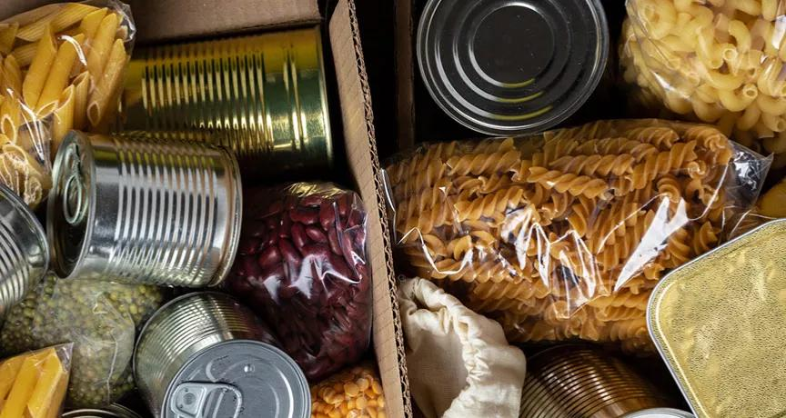
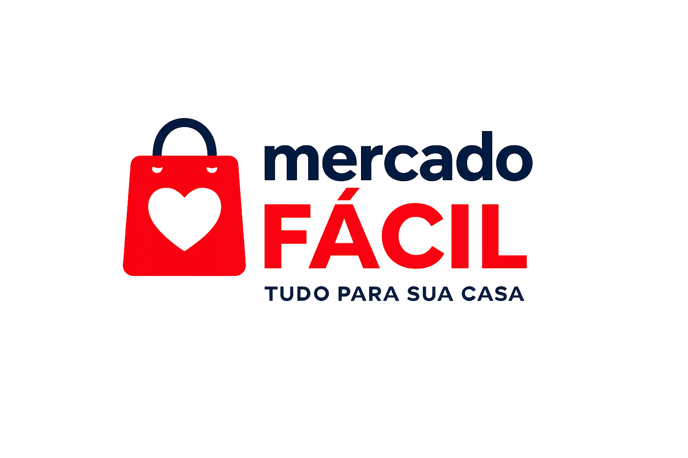
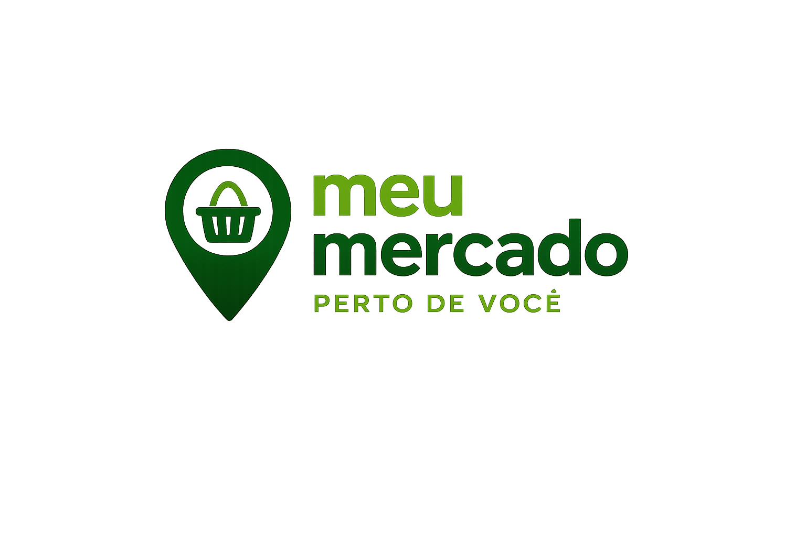
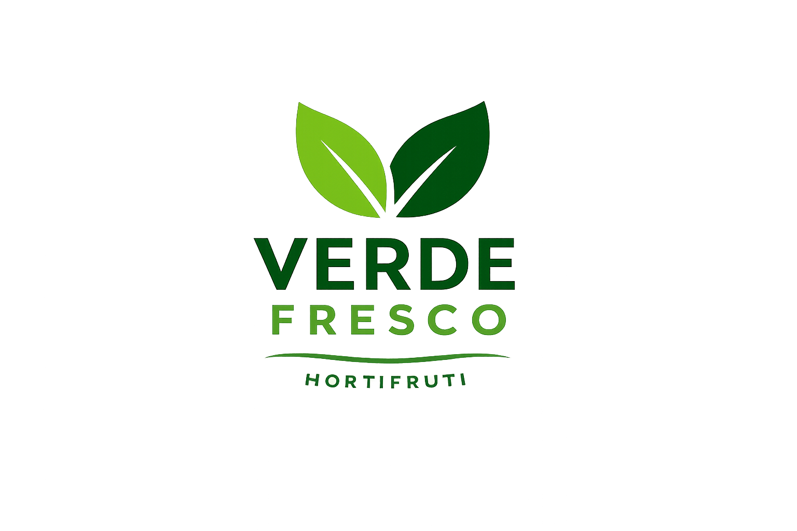
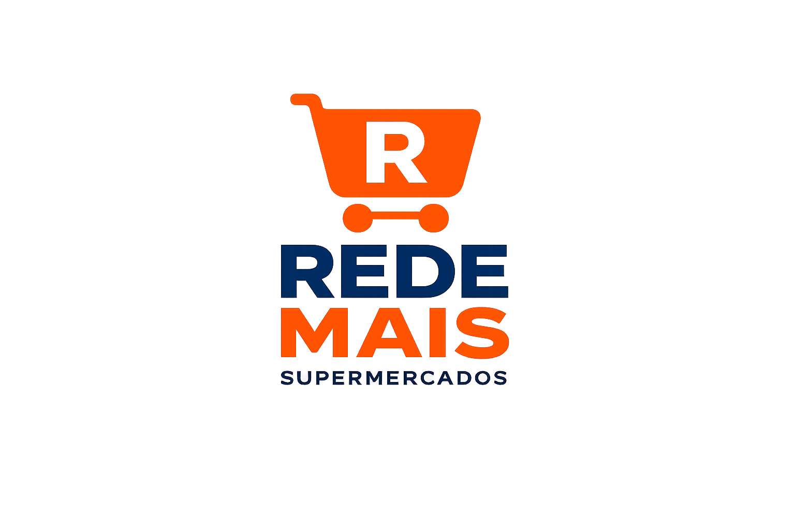

Objetivos
Tem como objetivo ajudar pessoas que necessitam de alimentos, conectando aqueles que querem ajudar e empresas que querem tornar-se pontos de coleta

Pontos de coleta
Conheça os pontos de coleta Chapecó e região.
Pessoas à ajudar
Conheça os pontos de coleta Chapecó e região.
Quais alimentos
Conheça os pontos de coleta Chapecó e região.




O que é o 2º objetivo da ODS?
O segundo Objetivo de Desenvolvimento Sustentável (ODS) da ONU busca acabar com a fome, garantir o acesso à alimentação de qualidade e promover uma agricultura sustentável até 2030. Esse objetivo incentiva ações que combatam o desperdício de alimentos, apoiem pequenos produtores e garantam que todas as pessoas tenham acesso a refeições nutritivas e suficientes para uma vida saudável.
O projeto Conecta Alimento contribui diretamente para a ODS 2 ao incentivar a redistribuição de alimentos que ainda podem ser consumidos, reduzindo o desperdício e ajudando pessoas em situação de vulnerabilidade. Além disso, a iniciativa promove conscientização sobre consumo responsável, solidariedade e sustentabilidade.